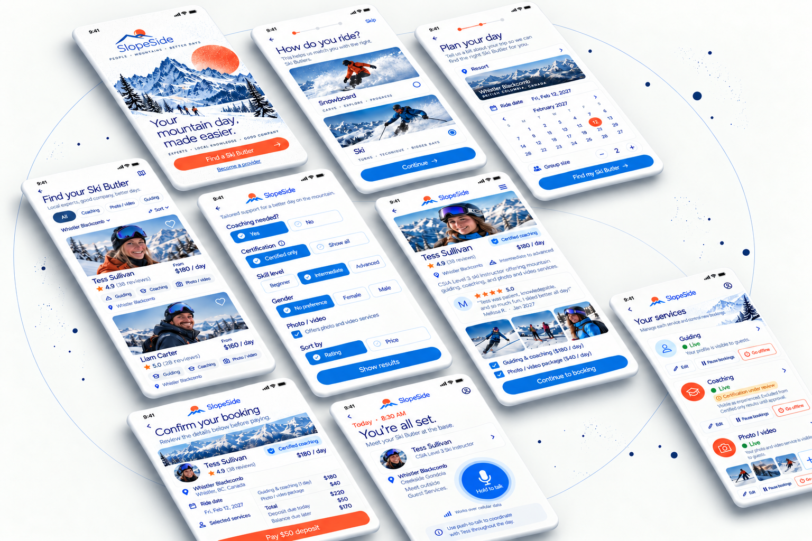

Finding the right support for a day on the mountain
SlopeSide

OVERVIEW
Making a mountain day easier to plan
SlopeSide grew out of a familiar problem on the mountain: my friends and I wanted to enjoy riding together, but finding instruction, a companion, or someone to capture the day often depended on separate arrangements. I explored a mobile service that lets riders describe their resort, date, level, and needs before comparing providers whose skills match their plans. To understand both sides, I interviewed three people through WeChat, including riders with different experiences and a part-time instructor. I used those conversations to shape personas, a service structure, booking flows, wireframes, and a high-fidelity interface concept.
Designing the screens made one question more important than the visual identity: can a rider tell exactly what each person offers and what a booking includes? I developed the mountain-inspired look and the rider and provider flows, but I have not yet run structured usability tests. The next step is to observe real booking decisions and check whether providers recognise their work in the service descriptions.
Opportunity
Finding the right support for a day on the mountain
I wanted to capture a successful snowboard turn, but my friends could not keep up to film it. We also wanted to enjoy riding rather than spend the day recording each other.
This experience made me think about the help surrounding a ski day. What if riders could find someone to teach, accompany or guide them, with additional support such as photography and transport?


Process
From conversations to booking flows
I developed an interview guide and spoke with three people through dedicated WeChat calls. Their experiences helped me explore both finding support and providing it.
I then worked on the service structure, booking flows, wireframes and visual direction. When I struggled with the flow, I used AI to explore UX questions and examined how existing applications, including Slope, organised their features.
Outcome
A platform concept for mountain-day support
SlopeSide developed into a platform concept centred on Ski Butler services and instruction. The current work brings together initial research, booking flows and interface exploration.
The latest revision focuses on matching riders’ stated needs with providers’ service information. This direction still needs to be tested with users.
01 / User Research
Starting with people I knew
I spoke with a riding partner at a similar level to me, an experienced rider who sometimes teaches part-time, and someone who stopped after a difficult first attempt.
The interviews explored ski-day difficulties, existing workarounds and concerns about booking strangers. Participants described coordinating carpools through public platforms, relying on friends and struggling to judge which instructors suited them. The part-time instructor mainly found customers through personal connections and had limited bookings.
These conversations gave the project an initial direction. However, all three participants were people I knew, and my questions began with problems I had already identified. A broader, more open exploration could reveal needs I had overlooked.
The research informed three distinct perspectives:

Needs an affordable way to get there, get started, and remember her first day.

Wants a provider she can trust, clear pricing, and photos she cannot take herself.

Wants steady bookings and clear boundaries around what they offer.
02 / Service Structure
Making individual capabilities visible
I prioritised Ski Butler services and instruction because they came up frequently in the conversations. A Ski Butler could offer a combination of support, such as teaching, guiding and photography, depending on their abilities.
This raised a design problem: a broad service label did not explain what someone could actually provide. I needed to make individual capabilities and boundaries visible.
For the first version, I focused on these core services and left separate photography and carpool booking experiences for later development. I also wanted to explore which services people would choose, rather than assume equal demand for every option.
03 / Booking Flow & Wireframes
Clarifying the choices riders need to make
The booking flow was where I became most uncertain. I could imagine screens, but I did not yet know which decisions users needed to make first.
In this revision, riders would enter their resort, date, sport and level, then select needs such as instruction, companionship or photography. Providers would supply corresponding service information to support matching.
Results would explain which needs each provider met. Before booking, riders would review the selected services, arrangements and price.
This gives the wireframes a clearer purpose: checking whether people can express their needs, understand the matches and know what they are booking.
04 / Visual Design
A mountain identity with a clear hierarchy
My graphic design background helped me develop SlopeSide’s mountain identity through cool blues, an orange sun, illustration and typography.
The interface also challenged me to use those skills differently. Provider abilities, qualifications and service details needed a clear hierarchy. Photographs, reviews, credentials and self-described experience each needed to communicate their own role in helping someone choose.

Interface Exploration
Matching needs with service information
The current interface exploration tests how riders can state their needs, compare relevant service information and understand what they are booking before they commit.

05 / Evaluation & Reflection
Questions for the next revision
I have not yet conducted structured usability testing. My next step would be to ask riders to find and book suitable support, observing how they interpret service options and provider information. I would also review the service setup with potential providers.
As the project developed, each decision revealed further questions. AI and reference applications helped me explore possibilities, but I still needed a way to judge whether my choices worked for other people.
SlopeSide made my motivation for studying UX more concrete. I want to learn how to conduct stronger research, evaluate interactions and turn findings into thoughtful revisions. The project showed me both what my visual design background could contribute and where I needed deeper learning.